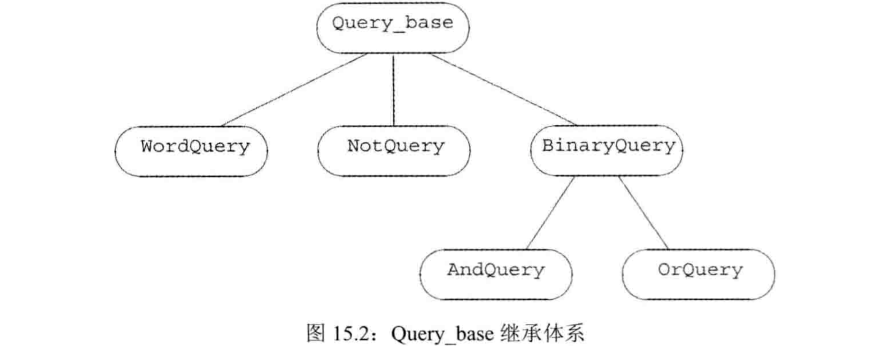
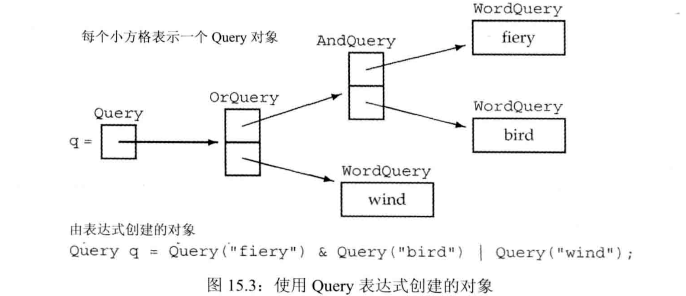
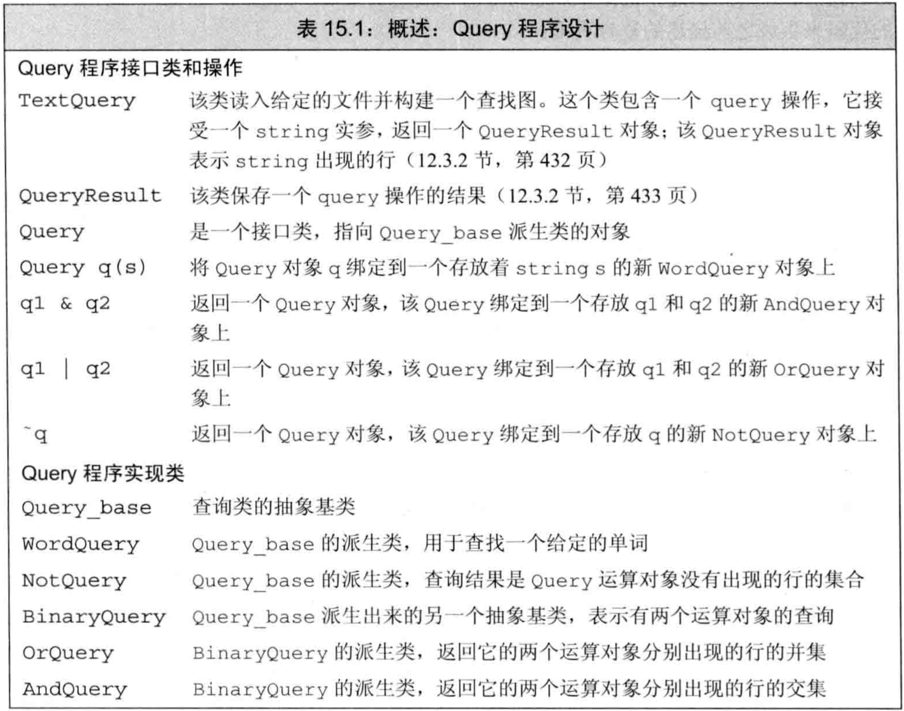

C++ primer 第15章 面向对象程序设计
文章目录
面向对象程序设计(OOP)基于三个基本概念：数据抽象、继承、动态绑定- 继承和动态绑定对程序的影响：
- 可以更容易地定义与其他类相似但不完全相同的新类
- 使用这些相似的类写程序时，可在一定程度上忽略它们的区别
OOP：概述
- 面向对象程序设计的核心思想是：数据抽象、继承、动态绑定
- 使用
数据抽象，可将类的接口与实现分离 - 使用
继承，可定义相似的类型并对其相似关系建模 - 使用
动态绑定，可在一定程度上忽略相似类型的区别，以统一的方式使用它们的对象
- 使用
- 通过继承联系在一起的类有一种层次关系：通常在层次关系的根部有一个基类，其他类直接或间接地由基类继承而来，称为派生类。
基类定义层次关系中的共同成员，每个派生类定义各自特有的成员虚函数：基类希望它的派生类各自定义自身版本的这种函数，则在基类中声明为虚函数，形式为返回类型前加关键字virtual类派生列表：派生类必须通过类派生列表来明确指出从哪个/哪些基类继承而来。形式为冒号后紧跟逗号分隔的基类列表，每个基类前可有访问说明符- 例子：虚函数和类派生列表
|
|
- 派生类重新定义的虚函数可在声明时加
virtual，但并非强制（基类中定义为虚的函数，在派生类中默认为虚） - 派生类必须在内部对需要重新定义的虚函数进行声明。
- C++11允许派生类显式注明用哪个成员函数覆盖基类的虚函数，形式是在其形参列表后加
override关键字 - 通过动态绑定，可用同一段代码分别处理基类和派生类的对象
动态绑定/运行时绑定：使用基类的引用/指针调用虚函数时，函数的版本由运行时的对象类型决定- 例子：同一段代码分别处理基类和派生类的对象
|
|
定义基类和派生类
定义基类
- 例子：定义基类
|
|
- 继承关系中根节点的类通常应定义一个
虚析构函数，即使它不执行任何操作 - 对于虚函数，派生类经常要提供自己的新定义来
覆盖从基类继承而来的旧定义 - 基类的两种成员函数：
- 基类希望其派生类进行覆盖：定义为虚函数，使用指针/引用调用时，在运行时动态绑定
- 基类希望其派生类直接继承：解析过程发生在编译期而非运行时
- 基类在成员函数声明语句前加关键字
virtual将其声明为虚函数，使用动态绑定。 - 任何
除构造函数之外的非static函数都可以是虚函数 - 关键字virtual只能出现在类内部的声明语句前，不能用于类外的定义
- 若基类把一个函数声明为虚函数，则在其派生类中也隐式地是虚函数
- 派生类可继承基类的成员，但派生类的成员函数不能访问从基类继承而来的
private成员 - 基类的
protected成员可允许其派生类访问，但禁止其他用户访问
定义派生类
- 派生类必须使用
类派生列表明确指出是从哪个/哪些基类继承而来的 - 类派生列表的形式是一个冒号后紧跟以逗号分隔的基类列表，每个基类前可有访问说明符public/protected/private
- 对于需要覆盖的成员函数，派生类必须重新声明
- 例子：定义派生类
|
|
- 类派生列表中的访问说明符是控制派生类从基类继承而来的成员是否对派生类的用户可见
- public派生：
- 若一个派生是public的，则基类的public成员也是派生类接口的一部分
- 可将public派生类型的对象绑定到基类的引用/指针上
- 大多数类都只继承自一个基类，这称为
单继承 - 派生类经常（但不总是）覆盖它继承的虚函数，若未覆盖则直接继承基类中的版本（类似普通成员函数）
- 派生类可在其覆盖的函数前使用
virtual关键字（并非必要），基类中的虚函数在派生类中隐式地也是虚函数 - C++11可用
override关键字显式注明覆盖基类中的虚函数，此时若未覆盖则报错 - override出现在形参列表后、const函数的const关键字后、引用成员函数的引用限定符后
- 派生类对象包含多个组成部分：
基类部分：从基类中继承而来的部分，若继承自多个基类，则有多个基类部分派生类部分：派生类自己定义的非static成员
- C++标准并未规定派生类对象在内存中如何分布，基类部分和派生类部分并不一定是各自连续的
派生类到基类的类型转换：可将基类的指针/引用绑定到派生类对象的基类部分，这种转换是隐式的- 例子：派生类到基类的类型转换
|
|
每个类控制自己成员的初始化：派生类不能直接初始化从基类继承而来的成员，必须使用基类的构造函数来初始化其基类部分- 在派生类的构造函数初值列表中，将实参传递给基类的构造函数来初始化基类部分，否则基类默认初始化
- 派生类构造函数运行过程：
- 初始化基类部分：在初值列表中执行基类构造函数，否则默认初始化
- 按声明顺序初始化派生类部分的成员
- 执行派生类构造函数体
- 例子：派生类构造函数初值列表中初始化基类部分
|
|
- 派生类成员可访问基类的public/protected成员
- 派生类的作用域嵌套在基类作用域内部，故在派生类中可直接使用基类成员
每个类定义自己的接口：派生类不能直接初始化基类成员，而应遵循基类接口，使用基类构造函数- 若基类定义了
static成员，则在整个继承体系中只有该成员的唯一定义。无论派生出多少个派生类，对static成员来说都只有唯一的实例 - static成员遵循通用的访问控制。若某static成员可访问，则既可通过基类使用也可通过派生类使用
- 例子：static成员
|
|
- 派生类只声明不定义时，不可包含派生列表。声明是让程序知道名字的存在和实体类型，派生列表是定义的一部分。
- 若要将某类用作基类，则必须已定义，不可只声明。因为定义派生类时必须已知基类，才可包含并使用基类部分。
- 一个类不能派生它本身
- 一个类可以是派生类，也可是其他类的基类
直接基类出现在派生列表中，间接基类通过直接基类继承而来- 每个类都继承其直接基类的所有成员，故最终的派生类包含其直接基类的子对象以及每个间接基类的子对象
- C++11使用
final关键字禁止一个类被继承 - 例子：禁止类被继承
|
|
类型转换与继承
- 把引用/指针绑定到一个对象的情况：
- 引用/指针的类型与对象一致
- 对象的类型含有可接收的const转换规则
- 可将基类类型的引用/指针绑定到派生类对象
- 使用基类的引用/指针时，并不知道它绑定的对象的真实类型（运行时才可确定）
- 基类类型的智能指针也支持动态绑定
- 静态类型和动态类型：
静态类型在编译期已知，是变量/表达式声明时的类型动态类型到运行期才可知，是变量/表达式在内存中对象的类型
- 只有基类的引用/指针才可能发生静态类型和动态类型不一致的情况
- 基类和派生类之间的自动类型转换：
- 存在派生类向基类转换，即
基类引用/指针可指向派生类：每个派生类都有基类部分，基类引用/指针可绑定到基类部分 - 不存在基类向派生类的转换，即
派生类引用/指针不可指向基类：基类的对象可能是派生类的一部分，也可能不是 - 特别是，即使基类的引用/指针绑定到派生类，也不可将其赋值给该派生类类型的引用/指针
- 存在派生类向基类转换，即
- 例子：派生类的引用/指针不可指向基类
|
|
- 基类向派生类的显式转换：
- 编译器只能检查引用/指针的静态类型来判断转换是否合法，故无法确定基类向派生类的转换在运行时是否安全，隐式转换会报错
- 若基类中有虚函数，则可用
dynamic_cast来请求向派生类的类型转换，该转换的安全检查将在运行时执行 - 若已知某个基类向派生类的转换一定是安全的，则可用
static_cast来强制覆盖编译器的检查
- 派生类对象向基类对象的隐式转换(slice down)：
- 派生类向基类的自动转换只对指针/引用有效，在派生类对象和基类对象之间不存在隐式转换。直接转换对象得到的可能并非预期
- 对类类型的对象初始化/赋值时，实质上是在调用构造函数/赋值算符，它们参数的类型经常是该类类型的引用。
- 由于参数是引用，故允许给基类的构造/拷贝/移动/赋值操作传递派生类对象。这些操作不是虚函数，故实际上运行的是基类的版本，它只能处理基类成员。
- 给基类的构造/拷贝/移动/赋值操作传递派生类对象时，只处理基类成员，忽略派生类自己的成员，派生类部分被
切掉(sliced down)了
- 例子：派生类对象用于构造基类对象时，派生类部分被切掉
|
|
- 具有继承关系的类之间的转换规则：
- 从派生类到基类的类型转换只对引用/指针有效
- 基类向派生类不存在隐式转换
- 派生类向基类的转换也可能因为访问受限而不可行（只有public继承，即派生类中的基类部分可被用户访问时，用户才可用基类指针访问派生类成员）
- 由于拷贝控制成员参数是引用，故经常可将派生类拷贝/移动/赋值给基类，此时只处理基类部分
虚函数
- 由于只有运行时才知道调用了哪个虚函数，故所有虚函数都必须有定义
- 虚函数调用的版本：
- 通过引用/指针调用虚函数时，被调用的版本是引用/指针绑定的动态类型对应的版本
- 通过非引用非指针的表达式调用虚函数时，编译期决定调用的版本为静态类型对应的版本
- 例子：引用/指针调用虚函数执行动态版本，非引用非指针调用虚函数执行静态版本
|
|
多态：具有继承关系的多个了类型称为多态类型，因为可使用它们的多种形式而无需在意它们的差异- 允许引用/指针的静态类型和动态类型不一致是C++支持运行时多态的根本
- 使用基类的引用/指针调用基类成员函数时：
- 若该函数为虚，则运行时才可确定调用的是动态类型对应的版本
- 若该函数非虚，则编译期即可确定调用的是静态类型对应的版本
- 当且仅当引用/指针调用虚函数时，对象的静态类型和动态类型才会不同，使得解析调用发生在运行时
- 派生类中覆盖了虚函数时，可再次使用virtual关键字声明，但并非必须。基类中被声明为虚的函数在派生类中隐式为虚
- 虚函数的形参列表和返回类型：
- 派生类虚函数的形参必须与被它覆盖的基类虚函数完全一致。
- 派生类虚函数的返回类型必须与基类虚函数一致。除非返回类型是类自身的引用/指针，此时要求从派生类到基类的转换可访问（即派生类中的基类部分可被用户访问）。
- 若派生类定义了函数，它与基类中虚函数同名但形参列表不同，则是
重载而不是覆盖。编译器认为新函数与继承自基类的函数是独立的，新函数不会被基类的引用/指针调用。 - C++11允许使用
override关键字来说明派生类中的虚函数覆盖了基类的虚函数。若使用override标记了某函数但它未覆盖基类的虚函数，则报错 override标记的函数未覆盖基类虚函数则报错- 只有虚函数才可被覆盖，非虚函数要么重载要么重复定义
- 将某函数指定为
final，禁止覆盖该函数 - final和override说明符出现在形参列表（包括const和引用修饰符）和尾置返回类型之后
- 例子：override和final
|
|
- 虚函数可以有默认实参，若某次函数调用使用了默认实参，则实参值由静态类型确定
- 通过基类的引用/指针调用函数，则使用基类中的默认实参，即使运行的是派生类版本的函数。因此虚函数的默认实参应与基类一致
- 若希望对虚函数的调用不要动态绑定，而是指定某个类的版本，则可用
作用域算符 - 通常只有成员函数或友元的代码才需要使用作用域算符来回避动态绑定
- 当派生类的虚函数调用它覆盖的基类虚函数时，需要手动指定虚函数版本，回避动态绑定（否则调用自身，无限递归）
- 例子：用作用域算符手动指定虚函数版本
|
|
抽象基类
- 若一个基类只用于对其派生类提供抽象，但不希望产生该基类的实例，则可将该基类定义为
抽象基类(ABC) - 将一个虚函数定义为
纯虚函数，可明确告诉编译器这个函数只用于抽象，没有实际意义，无需被定义 - 将虚函数定义为纯虚函数的方法是在函数体的位置写
=0，且只能出现在类内部的虚函数声明语句处 - 例子：纯虚函数和抽象基类
|
|
- 不可直接定义抽象基类的对象，但其派生类的构造函数可使用抽象基类的构造函数来构建派生类的基类部分
- 也可为纯虚函数提供定义，但函数体必须在类外部。即，类内部不可为=0的函数再提供函数体
- 含有（或未经覆盖直接继承）
纯虚函数的类是抽象基类。抽象基类定义接口，其派生类可覆盖其接口。不能直接创建抽象基类的对象 - 例子：继承自抽象基类
|
|
重构负责重新设计类的体系，以便将操作/数据从一个类中移到另一个类中。对OOP而言重构很普遍
访问控制与继承
- 每个类控制自己成员的初始化，还控制自己的成员对派生类是否可访问
- 使用
protected说明符来说明它希望被派生类访问但不希望被其他用户访问的成员：- 类似private，protected成员对类的用户不可访问
- 类似public，protected成员对派生类的成员和友元可访问
- 派生类的成员和友元只能通过派生类对象来访问其基类部分的protected成员，对基类对象中的protected成员不可访问
- 例子：派生类的成员和友元只能通过派生类对象来访问其基类部分的protected成员
|
|
- 派生类的成员/友元不可访问基类对象的protected成员的原因是：若可以访问，则只需继承基类并声明友元（类似上例），即可规避protected的保护机制。
- 某个类对其继承而来的成员的访问权限受两方面影响：
基类中该成员的访问说明符：说明基类成员的权限（派生类能否访问该成员，用户能否访问该成员）类派生列表中的访问说明符：说明派生类中基类部分的权限（派生类的用户能否访问其基类部分）
- 派生类的成员/友元能否访问直接基类的成员，只与直接基类成员的访问说明符有关，与派生访问说明符无关
- 派生访问说明符的目的是控制派生类用户（包括派生类对象和派生类的派生类）能否访问该派生类的基类部分
- 假设D继承自B，则基类部分的访问控制：
- 若是
public继承：D的基类部分在D中public，D的所有用户都可访问其基类部分（基类部分的成员在D中保持基类中定义的访问控制） - 若是
protected继承：D的基类部分在D中protected，D的派生类成员/友元可访问其基类部分（基类部分的public成员在D中变为protected） - 若是
private继承：D的基类部分在D中private，只有D的成员/友元可访问其基类部分（基类部分的成员在D中都变为private）
- 若是
- 例子：继承中的访问控制
|
|
- 派生类向基类的类型转换是否可访问，由使用转换的代码和派生类的派生访问说明符共同决定。假定D继承自B：
- 只有D是public继承B时，用户代码才能使用D向B的转换，protected/private继承不可转换
- D以任何方式继承B，D的成员函数/友元都可使用D向B的转换
- 若D是public/protected继承B，则D的派生类成员/友元可使用D向B的转换
- 对代码中的某个节点而言，
若派生类中基类部分是可访问的，则派生类向基类的转换是可行的，否则不可转换。 - 三种用户：
普通用户：使用类的对象，只能访问类的public成员实现者：类的成员和友元，它们可访问类中的所有成员派生类：由类派生而来，可访问public成员和protected成员
- 友元关系不可传递，也不可继承。即，基类的友元不是派生类的友元，派生类的友元不是基类的友元
- 一个类的友元类的派生类不是这个类的友元
- 每个类负责控制自己成员的访问权限，即基类也控制派生类中基类部分的权限。特别的，基类的友元可访问派生类中基类部分的private
- 例子：友元与继承
|
|
- 若需改变派生类继承的某个名字的访问级别，可使用using声明
- 类内部使用
using声明，可对该类的直接/间接基类的任何可访问成员重定义访问权限。新的访问权限是该using语句所在处的权限 - 只有该类内部自己可访问的成员，才可用using改变权限
- 例子：using改变访问权限
|
|
- struct和class区别：
- 成员访问说明符：struct默认是public成员，class默认是private成员
- 派生访问说明符：struct默认是public继承，class默认是private继承
- 没有其他区别
- 例子：默认派生访问说明符
|
|
继承中的类作用域
- 每个类定义一个自己的作用域
- 类存在继承关系时，派生类的作用域嵌套在基类作用域中。若一个名字在派生类中无法解析，则去基类中寻找定义
- 由于继承关系的类作用域嵌套，所以派生类可直接访问基类成员（而不需指定基类作用域）
- 派生类调用成员时名字的解析过程，例如
Derv.func()：- 查找调用类型Derv的作用域
- 查找调用类型Derv的基类的作用域
- 沿着继承链向最终的基类查找
- 对象/引用/指针的静态类型决定该对象的哪些成员可见（即名字查找），即使静态类型与动态类型不一致。
- 例子：成员的名字查找取决于静态类型
|
|
- 当静态类型与动态类型不一致时，只有虚函数会查找动态类型中的重定义。其他成员都取决于静态类型，包括虚函数的名字查找也取决于静态类型
- 派生类可重用直接/间接基类中的名字，此时内层作用域的定义将
隐藏外层作用域的同名定义 - 可用
作用域算符来显式使用被隐藏的基类成员 - 例子：派生类的成员隐藏同名的基类成员
|
|
- 最佳实践：除了覆盖继承而来的虚函数外，派生类最好不要重用基类中的其他名字
- 函数调用的解析过程，假定调用
p->mem()或obj.mem()：- 确定p/pbj的静态类型
- 在静态类型对应的类中查找名字mem，若未找到则依次在直接基类中查找直到继承链顶端
- 找到名字mem后，进行常规的类型检查判断调用是否合法
- 假设调用合法，则编译器根据mem是否为虚而产生不同代码：
- 若mem是虚函数且通过引用/指针调用，则在运行时才会根据动态类型确定调用哪个版本的虚函数
- 否则编译器产生常规的函数调用
- 声明在内层作用域的函数不会重载外层作用域的函数，故派生类中的函数也不会重载其基类的成员。
名字查找先于类型检查：若派生类的成员与基类成员同名，则在派生类作用域中隐藏该基类成员。即使形参列表不一致也会隐藏而不是重载- 不同作用域中的函数不是重载关系。但可手动指定作用域来访问
- 例子：派生类的函数隐藏而不是重载基类同名函数，访问基类函数时需指定作用域
|
|
- 基类与派生类的同名虚函数必须有相同的形参列表。若它们形参列表不同，则是隐藏而不是覆盖
- 例子：形参列表不同则是隐藏而不是覆盖
|
|
- 成员函数无论是否是虚函数都可被重载。派生类可覆盖重载函数的0个或多个实例。
- 若派生类希望基类的所有重载虚函数都对它可见，则应或者覆盖所有的版本，或者一个也不覆盖。因为只要覆盖了一个，基类的函数名就会被隐藏
- 若派生类只需覆盖重载集合中的一些而非全部，可使用using声明解决名字被隐藏的问题
- 在派生类中使用
using声明语句指定名字，可将基类的所有重载版本都添加到派生类作用域。此时，派生类只需覆盖需要覆盖的重载版本即可，不需覆盖所有重载版本。对派生类未覆盖的重载版本的访问，实际上是对using声明点的访问
构造函数与拷贝控制
- 继承体系中的类也需要控制其对象执行构造/拷贝/移动/赋值/析构时发生什么。
- 若类未定义构造函数和拷贝控制，则编译器会合成
虚析构函数
- 基类通常应定义虚析构函数，使得派生类可用自己的析构函数覆盖它，这样就可动态分配继承体系中的对象。
- delete动态对象的指针时，用此指针调用该对象的析构函数。若该对象处于继承体系中，则指针的静态类型可能与指向对象的动态类型不匹配。基类中将析构函数定义为虚，可确保执行正确的析构版本
- 若基类的析构函数不是虚，则delete一个指向派生类对象的基类指针是未定义
- 例子：基类中的虚析构函数
|
|
- 三五法则的特例：基类需要虚析构函数是为了让派生类动态绑定析构函数，其函数体不一定有操作， 因此不一定需要其他的拷贝控制操作。
- 若一个类定义了虚析构函数，即使用=default手动指定合成版本，编译器也不会为该类合成移动操作
合成拷贝控制与继承
- 基类/派生类的合成拷贝控制成员：
- 对类本身的成员依次初始化/拷贝/移动/赋值/销毁
- 派生类的合成拷贝控制成员还负责调用直接基类的对应操作来对直接基类部分初始化/拷贝/移动/赋值/销毁，要求对应成员可被派生类访问且非删除
- 例如，派生类的析构函数除销毁自己的成员外，还调用直接基类的析构函数析构基类部分，依次调用直到继承链顶端
- 基类/派生类也可将合成的默认构造函数/拷贝控制成员定义为删除，某些定义基类的方式也可能导致派生类的合成成员被删除：
- 若基类的默认构造函数/拷贝构造函数/拷贝赋值算符/析构函数是删除的或不可被派生类访问，则派生类中相应函数被删除。（编译器无法对派生类的基类部分进行初始化/拷贝/赋值/销毁）
- 若基类的析构函数是删除的或不可被派生类访问，则派生类的默认构造函数/拷贝构造函数将被删除（无法销毁派生类的基类部分）
- 若派生类使用=default请求移动操作，且基类中对应的成员是删除的或不可被派生类访问，则派生类中该操作被删除（无法移动派生类的基类部分）
- 若基类的析构函数是删除的或不可访问，则派生类的移动构造函数被删除
- 若基类没有默认/拷贝/移动构造函数，则派生类中也不会定义相应操作
- 例子：基类删除拷贝构造函数
|
|
- 大多数基类都会定义虚析构函数，此时基类没有合成的移动操作，因此派生类中也没有合成的移动操作
- 基类缺少移动操作会阻止派生类拥有自己的合成移动操作，故派生类需要移动时应在基类中定义移动操作
- 例子：在基类中定义所有拷贝构造成员
|
|
派生类的拷贝控制成员
- 派生类的构造函数不仅要初始化自己的成员，还要初始化其基类部分。类似的，拷贝/移动构造函数/赋值算符也必须处理基类部分的成员，即手动调用基类的对应成员
- 但析构函数只负责销毁派生类自己的成员（隐式销毁）。类似的，派生类的基类部分也是被隐式销毁，析构函数自动被调用。即不需要手动调用基类虚构函数
- 派生类的拷贝控制成员调用基类拷贝控制成员：
- 派生类定义拷贝/移动构造函数时，通常应在
初值列表中显式调用基类的对应函数来初始化对象的基类部分。否则基类部分被默认初始化 - 派生类的赋值算符也必须显式调用基类的赋值算符，来为基类部分赋值
- 派生类的析构函数体执行完成后，成员（包括基类部分）被隐式销毁。故派生类析构函数不需显式调用基类析构函数（基类部分销毁时隐式调用），只需要管理自己的资源。
- 成员析构的顺序与构造相反：先执行派生类析构函数，再执行基类析构函数，直到继承链顶端
- 派生类定义拷贝/移动构造函数时，通常应在
- 例子：派生类拷贝/移动构造函数/赋值算符的初值列表中应显式调用基类的对应函数，析构则不用
|
|
- 构造和析构基类部分时派生类部分未完成：
- 派生类构造对象时，基类部分首先被构造。故执行基类构造函数时派生类部分还未初始化
- 派生类析构对象时，基类部分最后被析构。故执行基类析构函数时派生类部分不存在
- 由于执行派生类构造/析构函数时派生类部分是未完成状态，故不可调用派生类版本的函数，调用的虚函数都是基类版本
- 在构造/析构对象过程中，正在执行哪个类的构造/析构函数，就认为正在构造/析构的对象是这个类型
- 若构造/析构函数调用了某个虚函数，则应该执行与构造/析构函数所属类型对应的虚函数版本
继承的构造函数
- C++11中，派生类可重用其直接基类定义的构造函数，但并非常规继承（但为了方便仍称为继承）
- 一个类只初始化它的直接基类，也只继承其直接基类的构造函数
- 类不能继承默认/拷贝/移动构造函数。若派生类未定义它们，编译器将合成它们
- 派生类继承基类构造函数的方式是提供一条
using声明语句。这条using语句不是为了使名字可见，而是令编译器产生代码：对于基类的每个构造函数，编译器都生成一个对应的形参列表完全相同的派生类构造函数 - 例子：用using声明来继承构造函数
|
|
- 继承构造函数用的using声明生成的构造函数形如：
derived(params):base(args){}- derived是派生类名，base是基类名
- params是派生类构造函数的形参列表，args使用派生类形参调用基类构造函数
- 该构造函数只初始化基类部分。若派生类有自己的成员，则默认初始化
- 与普通using声明不一样，继承构造函数的using声明不会改变该函数的访问权限，权限仍与基类保持一致
- 用using声明产生的派生类构造函数不可指定
explicit或constexpr，这两个属性与基类保持一致 - 若基类的构造函数有默认实参，则using产生的派生类构造函数不会继承这些实参，而是产生多个版本的构造函数，每个版本分别省略一个含默认实参的形参。例如，若基类构造函数有两个形参，其中一个有默认实参，则派生类继承得到两个构造函数，一个接受两个形参（无默认实参），另一个只接受一个形参（是基类中无默认实参的那个）
- 若基类有多个构造函数，则派生类继承时一般继承所有，除两个例外：
- 派生类可继承一部分构造函数，而为其他构造函数定义自己的版本。若自定义的版本与基类版本形参列表相同，则这个构造函数不会被继承
- 默认/拷贝/移动构造函数不能被继承，它们按照正常规则合成。若一个类只有继承的构造函数，则他也将有一个合成的默认构造函数
容器与继承
- 使用容器存储继承体系的对象时，由于容器不可保存不同类型的元素，故不可直接存储具有继承关系的多种对象
- 当派生类对象被赋值给基类对象时，派生类部分被“切掉”，只保留基类部分。因此若把派生类对象保存在基类类型的容器中，它们就不再是派生类对象了
- 例子：派生类对象被放在基类容器中，被切掉
|
|
- 希望在容器中存放具有继承关系的对象时，实际存放的通常是基类的指针/智能指针。指针所指的动态类型可以是基类/派生类
- 可将派生类的内置指针/智能指针转换为基类的内置指针/智能指针
- 例子：在容器中保存基类指针
|
|
编写Basket类
- C++做OOP的一个悖论是，无法直接使用对象进行面向对象编程，而是必须使用指针/引用
- 大量使用指针会增加程序的复杂性，故经常定义一些辅助类（
句柄类）来处理需要大量指针操作的情况 new语句不能处理多态，需要多态时应将new封装进虚函数中- 例子：使用句柄类管理指针
|
|
文本查询程序再探
- 需求：查询文本中出现某单词的行数，并可使用与或非算符
- 查询的文本：
|
|
- 测试样例1：单词查询 Daddy
|
|
- 测试样例2：逻辑非查询 ~(Alice)
|
|
- 测试样例3：逻辑或查询 (hair | Alice)
|
|
- 测试样例4：逻辑与查询 (hair & Alice)
|
|
- 测试样例5：混合使用算符 ((fiery & bird) | wind)
|
|
面向对象的解决方案
- 基于12.3的TextQuery类来表示对一个单词的查询，QueryResult类来表示查询的结果
- 应将不同的查询建模为独立的类，它们由同一个基类派生而来
- WordQuery类用于查询单个单词
- NotQuery类用于查询单个单词的非
- OrQuery类用于查询两个单词的或
- AndQuery类用于查询两个单词的与
- 这些类需要包含两个操作（成员函数）：
- eval方法：接受一个TextQuery对象，返回一个QueryResult结果
- rep方法：返回一次查询的string描述，如”((fiery & bird) | wind)”
- 继承和成员的区别：
is a建模：继承关系，A是一种Bhas a建模：成员关系，A是B的一部分
- 抽象基类定义公共接口：
- 四个查询类之间不存在彼此继承，而是互为兄弟。应定义公共的抽象基类Query_base来表示所有类的共同接口
- 抽象基类Query_base中应将eval和rep方法都定义为纯虚函数，使用到的4个派生类都必须自定义版本覆盖它们
- WordQuery和NotQuery是一元查找，OrQuery和AndQuery是二元查找。应定义抽象基类BinaryQuery来表示二元查找的接口
- 最终的继承关系如图15.2 
- 用统一的接口隐藏继承体系：
- 用户不会直接使用继承体系中的类，而是定义一个接口类Query，配合算符来调用这4个派生类
- 接口类使用形式：Query q=Query(“fiery”)&Query(“bird”)|Query(“wind”);
- 接口类Query中保存抽象基类Query_base的指针，该指针绑定到4个派生类之一的对象
- 用户代码使用接口类Query来间接创建并处理继承体系中的对象，方式是对Query类定义接受string的构造函数，并重载与或非算符
- &算符生成新的AndQuery对象和新的Query对象，后者中保存前者的指针
- |算符生成新的OrQuery对象和新的Query对象，后者中保存前者的指针
- ~算符生成新的NotQuery对象和新的Query对象，后者中保存前者的指针
- 接受string的构造函数生成新的WordQuery对象和新的Query对象，后者中保存前者的指针
- 将一个表达式看成一棵
树，树上每个节点都是一个接口类Query的对象及其底层维护的对象。叶子节点底层是WordQuery，进行真正的查找工作。非叶子节点根据其子节点的结果来算出自己的结果。非节点有一个子节点，与节点和或节点有两个子节点 - 如图15.3是一个表达式创建的对象们，对表达式求值就是沿着箭头依次对每个对象求值。 
- 如表15.1是该程序的设计 
Query_base类和Query类
- 在这里定义所有类的共同基类Query_base和所有操作的共同接口Query
|
|
派生类
- 在这里定义使用表达式构建出一棵树的框架
- 定义用搜索词string/与或非算符如何构造出一个节点（包括接口Query和底层对象）
- 定义父节点与子节点的关系（用子节点的Query创建父节点，子节点的Query是父节点中的成员）
|
|
eval函数
- 在这里定义父节点如何根据子节点的结果计算自己的结果
|
|
- 封装：将上述定义按顺序放入文件中，并添加头文件和头文件保护，封装为hpp：
|
|
- 测试：建立cpp文件，包含上述头文件
|
|